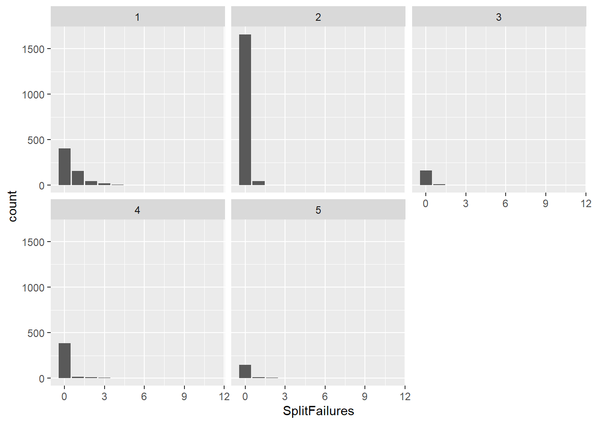
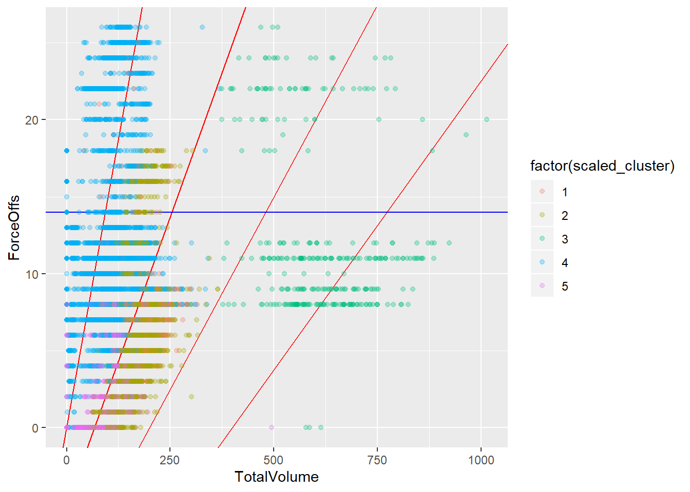
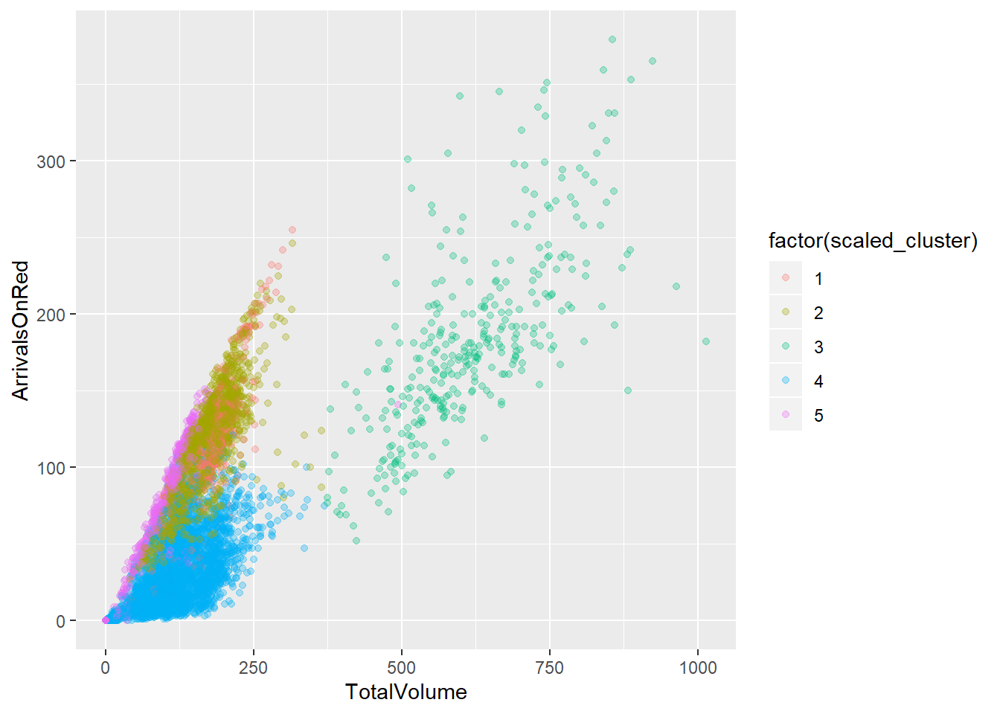
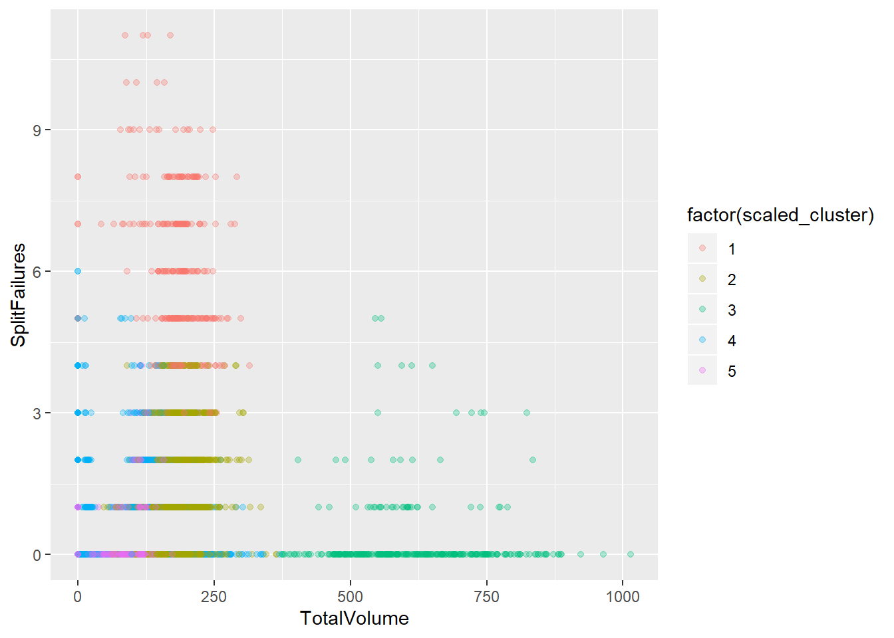
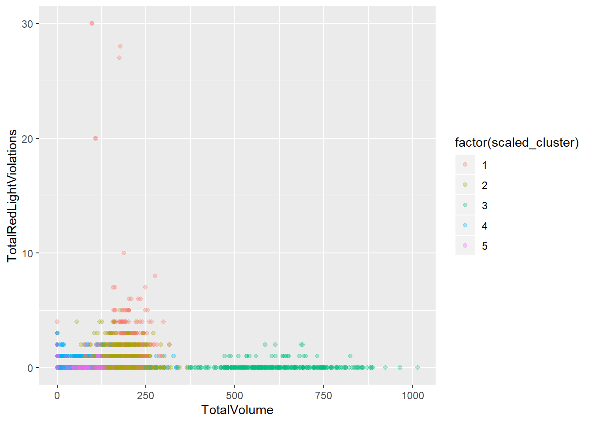
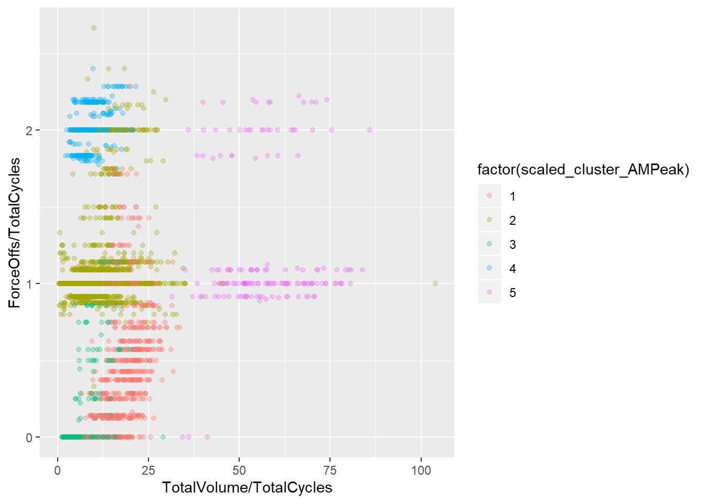

03_data
Bruce Wang
10/10/2019
K-means Cluster Analysis
# Setup Cluster variables
cluster_variables <- c("TotalVolume", "SplitFailures", "ArrivalsOnGreen", "ArrivalsOnRed", "PlatoonRatio", "ForceOffs", "GapOuts", "VCRatio", "TotalRedLightViolations")
# Create Table without NA Volue
complete_df <- na.omit(df6)
# Normal and Scaled clusters
clusters <- complete_df %>%
select(cluster_variables) %>%
kmeans(centers = 5)
scaled_clusters <- complete_df %>%
select(cluster_variables) %>%
mutate_all(scale) %>% # want to scale the data to make it normalized for kmeans
kmeans(centers = 5)
clustered_df <- complete_df %>%
mutate(cluster = clusters$cluster,
scaled_cluster = scaled_clusters$cluster)How different are the clusterings? Turns out they are very different!
clustered_df %>%
group_by(cluster, scaled_cluster) %>%
tally() %>%
spread(scaled_cluster, n, fill = 0) %>%
knitr::kable()| cluster | 1 | 2 | 3 | 4 | 5 |
|---|---|---|---|---|---|
| 1 | 7 | 17 | 0 | 888 | 132 |
| 2 | 250 | 980 | 0 | 94 | 263 |
| 3 | 36 | 189 | 0 | 2123 | 205 |
| 4 | 0 | 0 | 326 | 0 | 1 |
| 5 | 17 | 42 | 8 | 943 | 0 |
Going forward, we will make only plots using the scaled clutering algorithm.
Plots
Total Volume vs Force-Offs
ggplot(clustered_df, aes(x = TotalVolume, y = ForceOffs, color = factor(scaled_cluster))) +
geom_abline(slope = 30/200, intercept = 0, col = "red")+
geom_abline(slope = 30/400, intercept = -5, col = "red")+
geom_abline(slope = 30/600, intercept = -10, col = "red")+
geom_abline(slope = 30/800, intercept = -15, col = "red")+
geom_hline(yintercept = 0.5, col = "blue")+
geom_point(alpha = 0.3) 
I wonder if we can code up some kind of discrimination function based on the clusters. Like, draw the blue line so it contains 80% of points in cluster 1.
blue_level <- clustered_df %>%
filter(scaled_cluster == 1) %>%
select(scaled_cluster, ForceOffs) %>%
group_by(ForceOffs) %>% tally() %>%
mutate(p = n / sum(n),
cump = cumsum(p)) %>%
filter(cump < 0.85) %>%
slice(nrow(.)) %>% .$ForceOffs
ggplot(clustered_df, aes(x = TotalVolume, y = ForceOffs, color = factor(scaled_cluster))) +
geom_abline(slope = 30/200, intercept = 0, col = "red")+
geom_abline(slope = 30/400, intercept = -5, col = "red")+
geom_abline(slope = 30/600, intercept = -10, col = "red")+
geom_abline(slope = 30/800, intercept = -15, col = "red")+
geom_hline(yintercept = blue_level, col = "blue")+
geom_point(alpha = 0.3) 
TotalVolume VS Gapout
ggplot(clustered_df, aes(x = TotalVolume, y = GapOuts, color = factor(scaled_cluster))) +
geom_abline(slope = 30/200, intercept = 0, col = "red")+
geom_abline(slope = 30/400, intercept = -5, col = "red")+
geom_abline(slope = 30/600, intercept = -10, col = "red")+
geom_abline(slope = 30/800, intercept = -15, col = "red")+
geom_hline(yintercept = 0.5, col = "blue")+
geom_point(alpha = 0.3)
TotalVolume VS ArrivalOnGreen
ggplot(clustered_df, aes(x = TotalVolume, y = ArrivalsOnGreen, color = factor(scaled_cluster))) +
geom_point(alpha = 0.3)
TotalVolume VS ArrivalOnRed
ggplot(clustered_df, aes(x = TotalVolume, y = ArrivalsOnRed, color = factor(scaled_cluster))) +
geom_point(alpha = 0.3)
TotalVolume VS SplitFailures
ggplot(clustered_df, aes(x = TotalVolume, y = SplitFailures, color = factor(scaled_cluster))) +
geom_point(alpha = 0.3)
TotalVolume VS TotalRedLightViolations
ggplot(clustered_df, aes(x = TotalVolume, y = TotalRedLightViolations, color = factor(scaled_cluster))) +
geom_point(alpha = 0.3)
PlatoonRatio VS VCRatio
ggplot(clustered_df, aes(x = PlatoonRatio, y = VCRatio, color = factor(scaled_cluster))) +
# geom_abline(slope = 30/200, intercept = 0, col = "red")+
# geom_abline(slope = 30/400, intercept = -5, col = "red")+
# geom_abline(slope = 30/600, intercept = -10, col = "red")+
# geom_abline(slope = 30/800, intercept = -15, col = "red")+
geom_point(alpha = 0.3)